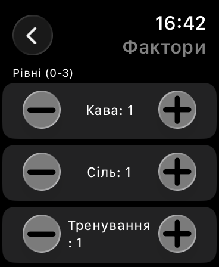
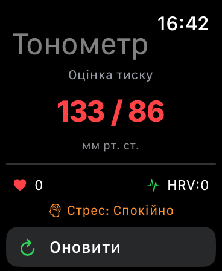
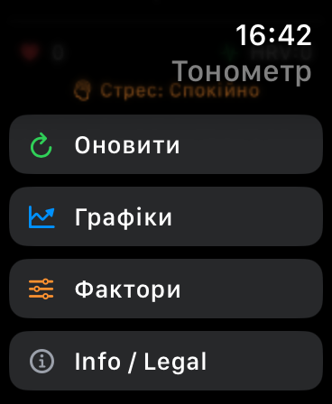
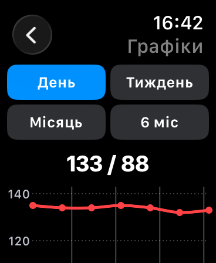
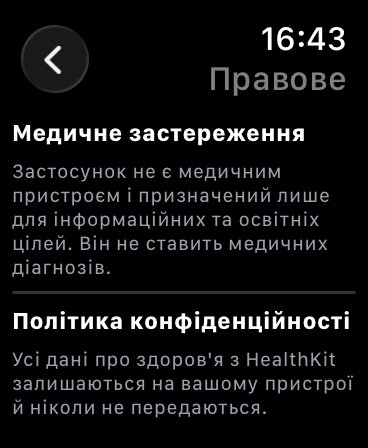

Apple Watch informational wellness companion that estimates blood pressure trends alongside heart rate, HRV, stress status, and daily lifestyle factors (coffee, salt, workouts), with period charts and legal/privacy information.





Need help, have questions, or found a bug? Contact support at: abmixdj@gmail.com
Last updated: November 2026
HealthControl respects your privacy. Health and wellness data (including HealthKit data, logged lifestyle factors, and trend estimates) remain on your device and are not sold or transferred to third parties.